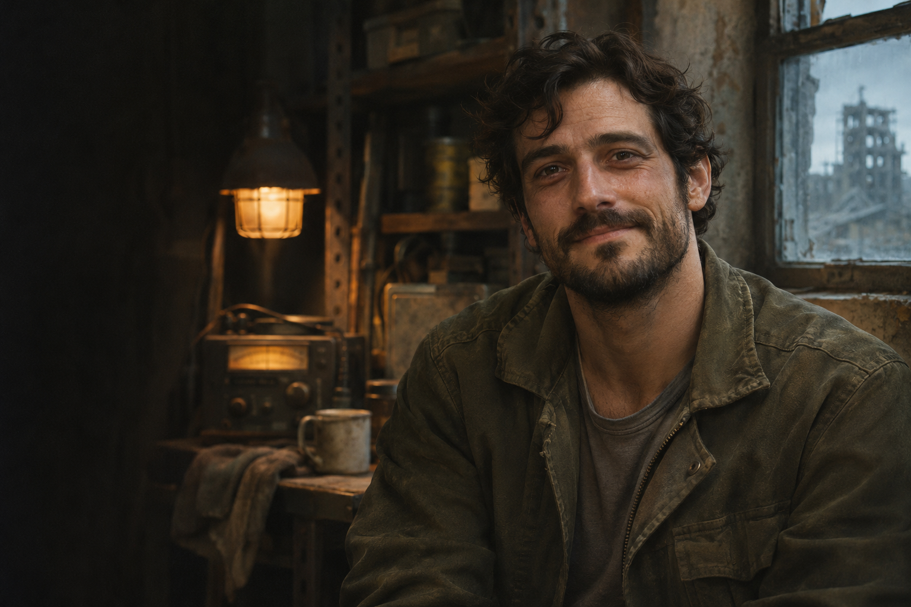

Gabriel
Mercer.
NOIVO DE JULLY // TÉCNICO DE MANUTENÇÃO
Ele sabia consertar motores, portas e geradores. Na última rota, encontrou uma forma de fazer o mundo olhar para longe o bastante para Jully continuar andando.
SEGUIR A ÚLTIMA FREQUÊNCIAA luz do corredor
ficava acesa para ela.
Antes do Dia D, Gabriel fazia manutenção de elevadores. Depois, usou o mesmo ouvido atento para manter bombas d’água, rádios e geradores funcionando nos abrigos. Não era soldado nem gostava de fingir que sabia lutar. Era o homem que percebia um motor falhar antes que todos perdessem a luz.
Ele conheceu Jully durante uma queda de energia no abrigo dos Hellsings. Ela tentava recuperar um receptor; ele apareceu com uma lanterna, abriu o painel do gerador e ficou ali até o chiado do rádio virar uma voz. Depois disso, passou a deixar uma lâmpada de manutenção acesa perto da porta quando ela saía para uma busca. Jully dizia que era exagero. Gabriel respondia que toda pessoa merece encontrar o caminho de volta.
LEMBRANÇA RECONSTRUÍDA // JULly E GABRIEL“Se eu não puder consertar o mundo, pelo menos deixo a luz acesa no caminho de casa.”
Uma vida comum.
Por isso, insubstituível.
Os poucos registros não falam de feitos grandiosos. Falam de trabalho, cuidado e de duas pessoas que ainda faziam planos.
-
ANTES // MANUTENÇÃO
Aprendeu a ouvir as máquinas
Gabriel trabalhava com elevadores e sistemas prediais. Gostava de deixar os quadros elétricos identificados para que qualquer pessoa pudesse encontrar o interruptor certo no escuro.
-
DEPOIS // ABRIGO
Encontrou Jully entre sinais
Quando chegou ao abrigo dos Hellsings, tornou-se um aliado civil. Jully cuidava das transmissões; Gabriel mantinha a energia e as portas que davam a elas uma chance de funcionar.
-
NOIVADO // PLANOS ADIADOS
Começaram a imaginar uma casa
O pedido veio sem festa: depois de uma noite inteira sem alarmes, Gabriel perguntou se, quando houvesse um lugar seguro, Jully escolheria construí-lo com ele. Ela disse sim antes que ele terminasse.
A sirene chamou
a horda para longe.
A evacuação passava por um antigo terminal de carga. A horda fechava a passagem por onde Jully e os sobreviventes precisavam sair. Gabriel encontrou um gerador de emergência e usou-o para reativar o motor e a sirene do veículo de serviço. O som abriu uma janela curta: a horda mudou de direção e seguiu o veículo para longe da saída.
Gabriel tomou um veículo de serviço e levou o alarme consigo pela linha vazia, mantendo os infectados atrás dele enquanto Jully conduzia o grupo pela escada de manutenção. Ela tentou voltar quando percebeu que ele não alcançaria a saída. Ele pediu que olhasse para o indicador verde no alto da escada — a mesma luz que ele deixava acesa para ela no abrigo.
O veículo parou junto a uma barreira caída. Jully viu os faróis sumirem atrás da plataforma e ouviu a sirene continuar por mais alguns segundos. A horda alcançou Gabriel. A passagem ficou livre tempo suficiente para que o grupo escapasse; ele morreu no terminal, e Jully foi retirada dali pelos sobreviventes que ainda dependiam dela.
Jully continuou.
Sem deixar de sentir falta.
Pouco tempo depois, nas condições extremas daquele período e ainda atravessada pela perda, Jully sofreu o aborto que já faz parte de sua história. Ela perdeu Gabriel e a criança que os dois esperavam em um intervalo curto demais para aprender a respirar entre uma dor e outra. Britney permaneceu ao lado dela nos dias em que Jully não conseguia abrir o rádio.
Anos depois, Jully voltou a recuperar sinais. Cada canal que ela mantém aberto carrega algo do homem que consertava o caminho de volta sem pedir que ninguém agradecesse. A luz não trouxe Gabriel de volta. Ainda assim, ajudou outras pessoas a encontrar a saída.
Para quem
deixou a luz acesa.
“Por muito tempo eu odiei aquela luz verde. Ela me mostrava a saída e não mostrava você. Eu queria que tivesse apagado junto com a sirene, porque continuar acesa parecia uma injustiça.
Depois entendi que você não deixou uma luz para me prender àquela noite. Deixou uma saída para que eu pudesse continuar. Eu perdi você, perdi a criança que esperávamos e passei um tempo sem conseguir ligar o rádio sem esperar a sua voz no retorno. Britney ficou comigo até o silêncio deixar de ser a única resposta.
Hoje, quando alguém chama por ajuda, eu abro o canal. Não porque deixei de sentir sua falta. Abro porque você me ensinou que um sinal pode continuar servindo de caminho, mesmo quando quem o enviou já não pode voltar.”
Ele não salvou o mundo.
Deu a Jully e aos outros tempo para continuarem nele.